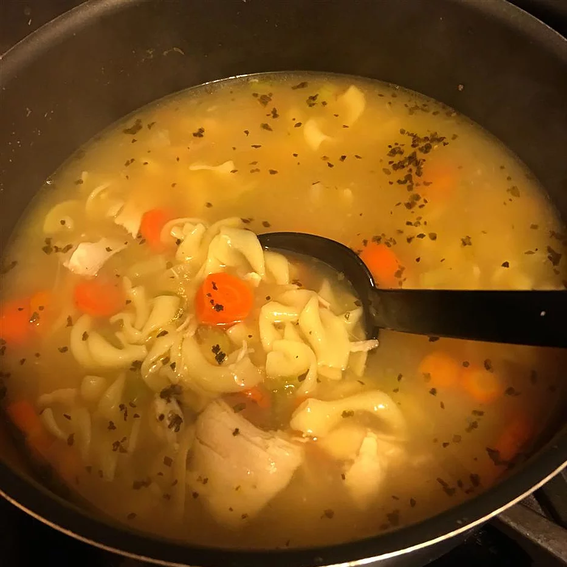

Easy Chicken Noodle Soup

Ingredients
- 1 tablespoon butter
- 1/2 cup chopped onion
- 1/2 cup chopped celery
- 4 (14.5 ounce) cans chicken broth
- 1 (14.5 ounce) can vegetable broth
- 1/2 pound chopped cooked chicken breast
- 1 1/2 cups egg noodles
- 1 cup sliced carrots
- 1/2 teaspoon died basil
- 1/2 teaspoon dried oregano
- salt and pepper to taste
Directions
- Melt butter over medium heat in a large pot.
- Cook onion and celery in butter until just tender (about 5 mins)
- Pour in chicken and vegetable broths.
- Stir in the remaining ingredients.
- Bring to a boil.
- Reduce heat and simmer 20 minutes before serving.
Contact Me
Briane White
University of Montana
32 Campus Drive
Missoula,MT 59812
Send me an Email!
More Soup Recipes